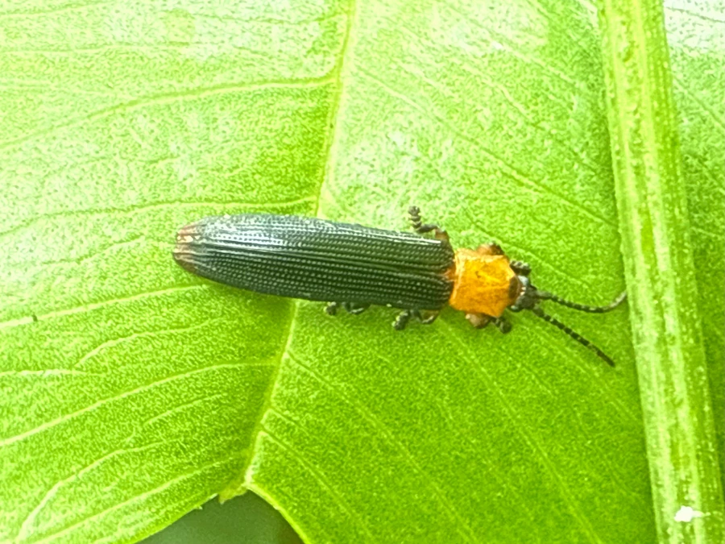

昆虫 · 动物界
椰心叶甲 Brontispa longissima

危害棕榈科植物的重大入侵害虫，成虫和幼虫群集在椰树未展开的心叶内取食，严重时导致椰树死亡。
- 分类
- 门节肢动物门纲昆虫纲目鞘翅目科叶甲科属椰心叶甲属
- 栖息环境
- 椰子、槟榔等棕榈科植物未展开的心叶内
- 地理分布
- 原产东南亚；中国海南、广东、广西、台湾等地有入侵
- 保护级别
- IUCN 暂无评估；中国外来入侵物种，无保护级别
物种志
椰心叶甲体长 8–10 毫米，身体扁平细长，呈红褐或黄褐色，鞘翅上有纵向的刻点和浅色斑纹，头部较小，触角细长，足短而善于攀爬。它一生多在椰树未展开的心叶皱褶内活动，成虫和幼虫群集取食叶肉，留下透明的叶膜。
它原产于印度尼西亚和巴布亚新几内亚，现已扩散到东南亚、太平洋岛屿和中国南方，被列入中国外来入侵物种名单，是椰子和棕榈科植物的重要害虫。它一年发生 3–6 代，雌虫可产卵约 100 枚，卵产于心叶缝隙中，幼虫孵化后继续在心叶内取食。受害椰树的嫩叶萎缩、变黄，严重时整株枯死，对海南、广东等地的椰子产业威胁很大。防控上采取检疫、剪除并销毁受害心叶、释放寄生蜂等措施，目前尚无根除办法，只能持续控制其种群。
形态与习性
- 食性成虫和幼虫取食棕榈科植物心叶叶肉
- 体长8–10 mm
- 寿命成虫约 1–2 个月，一年 3–6 代
- 繁殖卵生，雌虫产卵约 100 枚于心叶缝隙
- 活动节律多隐藏在未展开的心叶内活动
- 危害受害椰树嫩叶萎缩变黄，严重时整株枯死
趣味知识
- 椰心叶甲成虫和幼虫都躲在椰树未展开的心叶里取食，很难发现。
- 它被列为中国重大外来入侵物种，对海南椰子产业威胁很大。
- 释放寄生蜂是控制椰心叶甲的重要生物防治手段之一。